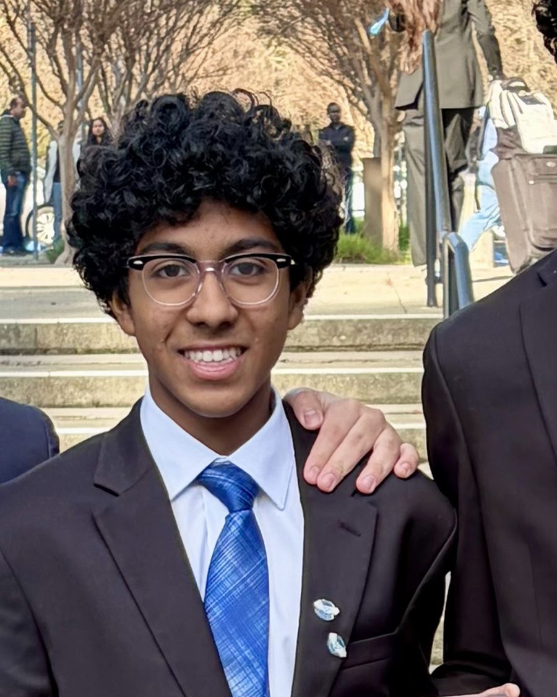

Elected office · Amador Valley DECA · 130 members
Director of Finance
My chapter has 130 members and they elected me to run its money. I organise the chapter's finances and complete the paperwork behind every purchase we make.
It is the least glamorous thing on this page and probably the most useful. Competitions reward a plan that looks good on paper, and I have spent two years getting good at those. This is the opposite exercise: the money is real, the constraints are fixed, and a large share of the work is filling out forms correctly so a purchase actually clears. Nobody notices when it goes right.
The elected part matters to me. I am handling money belonging to people who chose me to handle it, and I would rather be careful and slow than lose that.
